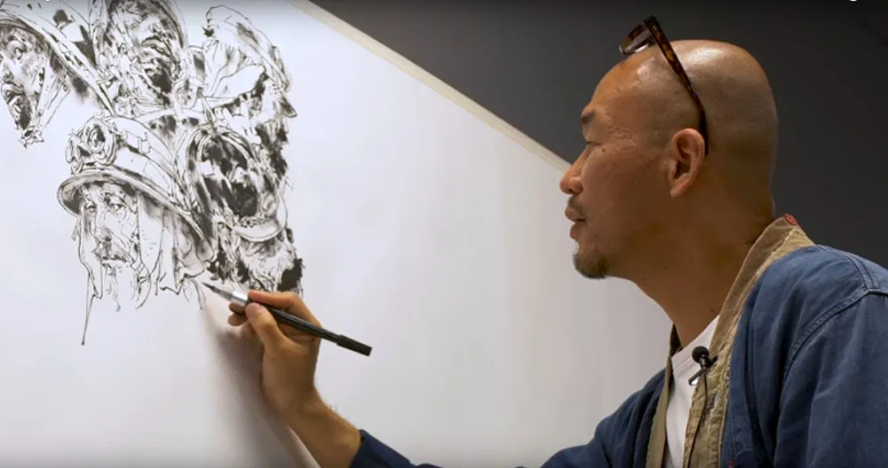

A todos los humanos nos gusta dibujar desde hace unos 40.000 años. Y es algo que podemos hacer casi todos. Tal y como escriben en Scientific American: “Dibujar es simplemente hacer líneas y puntos en el papel. Si sabes escribir tu nombre, puedes dibujar”. Es más, comenzamos a dibujar antes de saber leer y escribir. Todos los niños han dibujado en algún momento de su vida.
Conforme pasa el tiempo lo vamos olvidando, pero aunque ya no compremos libretas de bocetos, ni podamos (o queramos) dedicar horas a esta actividad, esto no significa que tengamos que abandonar el dibujo por completo. El dibujo es un ejercicio en pensamiento libre, sin limitaciones. A menudo representa una forma de soñar despierto de forma gráfica que es beneficiosa para el proceso creativo del mismo modo que la preparación de un atleta ha de preceder a sus resultados.

El arte mejora la calidad de vida
Cuando sostienes un lápiz o un pincel haces que tu cerebro empiece a imaginar y a trabajar para visualizar colores, imágenes o personas. Frecuentemente terminas representando tus emociones a través del arte y haces que tu cerebro trabaje en algo creativo aliviando el estrés y calmando tu malestar.
¿Cómo Empezar?
Garabateando
Garabatear es una forma de pensamiento externo que conecta personas e ideas, tanto conscientes como inconscientes. Es una forma de soñar despierto que lleva a asociaciones al azar que permiten alcanzar soluciones creativas. Lo mejor de todo, puedes hacerlo sin dedicarle una gran cantidad de tiempo, y sin necesidad de una fuerte inversión para materiales. Cualquier pedazo de papel y lápiz son el lienzo perfecto para tu imaginación.
Pintura
Con pintura me refiero a las obras que requieren más compromiso y dedicación que los garabatos. Esta no solo funciona como un vehículo para las ideas, si no que es la meta final de las mismas. Esta dedicación puede ayudarte a meditar y mover tu mente de la opresiva rutina diario. Si cuentas con el tiempo y la posibilidad de invertir en materiales, la pintura es una de las expresiones artísticas más gratificantes.
Recursos
Aquí hay un tutorial que pueden ayudarte a comenzar tu exploración del medio, si te interesa aún más recomiendo hacer tus propios proyectos, y abandonar poco a poco los tutoriales. Recuerda que son una herramienta, no los trates como un testamento.